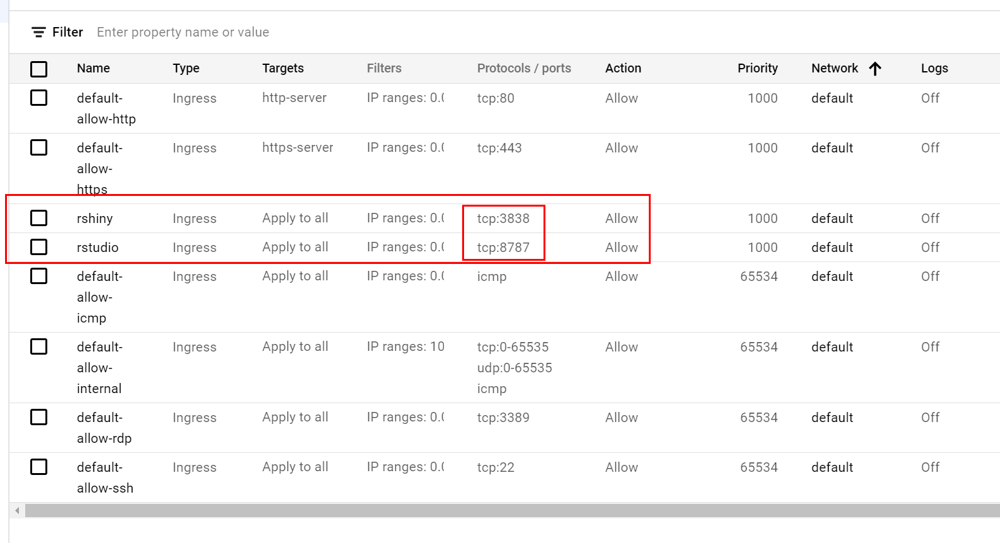

Chapter 3 Cloud Droplets
여러 클라우드 중에, google cloud, digital ocean 을 이용해서 shiny server를 운용해 보는 시간을 갖도록 하겠습니다.
3.1 GCP
GCP(google Cloud Platform) 은 1년 30만원 상당의 금액이 무료입니다. 따라서 본 실습에서 추천되는 클라우드 입니다. 구글에 gcp 치고 들어가서 가입하세요. 이후 과정은 아래와 같습니다.
3.1.1 GCP 에 VM 만들기
- google cloud platfomr
- login → compute engine
- vm instance, create
- option 선택, asia-seoul, 2 cpu, 4GB memory, ubuntus 20 with 10GB
- allow http, https traffic
- create
참고 동영상
gcp 에서 compute engine 을 선택

compute engine 에서 Create 클릭

이후 과정은 option 선택, asia-seoul, 2 cpu, 4GB memory, ubuntus 20 with 10GB allow http, https traffic
방화벽규칙 만들기 이후 8787이라는 포트로 접근해서 rstudio를 사용할 것입니다.
우측 아래 방화벽 규칙 만들기 클릭,
 이후 TitleBar 부분에 방화벽 만들기 (Create) 눌러서 아래의 화면에 들어갑니다. 아래와 같이 기본적인 것을 넣어 주세요
이후 TitleBar 부분에 방화벽 만들기 (Create) 눌러서 아래의 화면에 들어갑니다. 아래와 같이 기본적인 것을 넣어 주세요

방화벽 설정 1
화면 아래 쪽에 소스ip범위에 0.0.0.0/0을 tcp에 8787을 입력해 주세요. 8787을 rstudio 기본으로 사용할 것입니다. 이후 만들기.
방화벽 포트
같은 방법으로 3838 포트도 열어 줍니다. (3838은 shinyserver의 기본 포트가 될 것 입니다.)
 위에 처럼 그림이 8787과 3838이 열리면 완성된 것입니다.
3.2 Digital ocean
Digital ocean 에 들어가기

digital ocean 1
- Digital ocean Droplets 만들기
- login
- Create → Droplets
- Choose an image (Ubuntu)
- Choose a plan (Basic)

Digital ocean 2
3.2.1 digital ocean cmd terminal, winScp, putty
cmd 사용
- ssh username@ip 사용.
Winscp 설치
- WinSCP 설치 후 연결
- WinScp 설치
- 새로운세션 클릭
- 호스트 이름에 (주소:숫자.숫자.숫자.숫자)
- 사용자 이름에 root
- 생성한 비밀번호 넣기

WinScp
Putty 접속
- Putty 접속
- Putty 아이콘 클릭
- root 비밀번호 입력 (비밀번호 써질때 않보임)
- 검은 consol 창 열림

Putty
3.3 기본 user 만들기
참고 동영상
GCP 의 경우 첫번째 기본 화면으로 돌아옵니다. 그리고 SSH를 클릭합니다.

gcp ssh 1
그러면 아래와 같이 검은 터미널이 열릴 것입니다.

gcp terminal 1
Digital Ocean은 위와 같이 putty 접속 후 터미널 나오면 됩니다.
아래 부터는 관리자 권한으로 실행합니다.
sudo -s
> 비밀번호 입력하기- user 만들기
adduser myname
** 비밀번호 물어볼 것이고 그것 기억하세요
usermod -aG sudo myname3.4 R and Rstudio install
참고 동영상
Putty를 통해 접속했으면 이제 R과 R studio 를 설치하겠습니다. R이 실행되는지 확인하고, q()로 빠져 나옵니다.
R install
$ sudo apt-get update
$ sudo apt-get install r-base r-base-dev
$ sudo -i R
> q()
r start
Rstudio install
한줄씩 하세요
$ cd .. [상위 폴더 이동]
$ cd home/myname [저 같은 경우 jinhalab으로 이동]
$ mkdir download [download 폴더 생상]
$ cd download [download 폴더 이동]
$ sudo apt-get install gdebi-core
$ wget https://download2.rstudio.org/server/bionic/amd64/rstudio-server-1.4.1103-amd64.deb
$ sudo gdebi rstudio-server-1.4.1103-amd64.deb아래 처럼 active 가 뜨면 성공

rstudio install
Rstudio server setting
$ vi /etc/rstudio/rserver.conf - rstudio setting
- rserver.conf 들어가기
- 자판에서
a누루기 (수정 시작 알림) - www-address=0.0.0.0 입력
ctrl + c누루기:wq!입력 (w: write, q: quit)- 밖으로 나옴

rstudio setting
Rstudio server 접속
- Rstudio server
- local comp 에서 chrome
- 주소 창에 내 주소 + rstudio : 예 10.20.01.0:8787
- username + password


3.5 shiny server install
R packages 로 shiny library 설치
$ sudo su - \
> -c "R -e \"install.packages('shiny', repos='https://cran.rstudio.com/')\""$ sudo apt-get install gdebi-core
$ wget https://download3.rstudio.org/ubuntu-14.04/x86_64/shiny-server-1.5.16.958-amd64.deb
$ sudo gdebi shiny-server-1.5.16.958-amd64.deb아래처럼 active가 뜨면 정상
 > shiny-server 접속해 보기
> shiny-server 접속해 보기
- shiny-server 접속
- chrome open
- 주소창에 주소:3838 예) 192.169.2.3:3838
- error message 확인
- rmarkdown install 확인

shiny server 2
rmarkdonw error 있으면 아래 실행후 shiny-server 재 접속
$ sudo su - \
> -c "R -e \"install.packages('rmarkdown', repos='https://cran.rstudio.com/')\""추가 packages (linux) 설치
sudo apt-get install build-essential libcurl4-gnutls-dev libxml2-dev libssl-dev libssl-dev
방화벽 설정
$ sudo ufw allow 3838shiny server index.html 수정
참고 동영상
cd /srv/shiny-server
vi index.html
이후 a 치고, editor 수정 나올때는 esc누루고 :wq!. 그냥 저장하지 않고 나오고 싶으면 :qa! 로 나오기.
shiny-server 로가서 새로 고침.
shiny-server index
3.6 도메인 연결
여기 부터는 선택사항입니다.
Nginx 파일 수정
Nginx 설치 → Nginx 접속 확인
$ sudo apt-get update && sudo apt-get install nginx
$ sudo service nginx stop
$ sudo service nginx start
$ sudo service nginx restartexample.domain 으로 접속
만약 jinhalab.org 라는 도메인을 연결했다면 아래처럼 확인됨.

nginx 1
nginx and shiny server
자세한 것은 https://www.digitalocean.com/community/tutorials/how-to-set-up-shiny-server-on-ubuntu-16-04 을 참고하세요
nginx config 설정
참고: https://www.digitalocean.com/community/tutorials/how-to-install-nginx-on-ubuntu-18-04
http {
map $http_upgrade $connection_upgrade {
default upgrade;
'' close;
}
...
server_names_hash_bucket_size 64;
...
}
nginx key 생성
cd /etc/nginx/ssl
openssl req -new -newkey rsa:2048 -nodes -keyout jinhalab.key -out jinhalab.csr
openssl x509 -req -days 365 -in jinhalab.csr -signkey jinhalab.key -out jinhalab.crt모든 서버 shut down
sudo systemctl stop nginx
sudo systemctl stop rstudio-server
sudo systemctl stop shiny-serverexample domain config 편집
$ sudo nano /etc/nginx/sites-available/example.com
> example.com 편집화면
server {
listen 80 default_server;
listen [::]:80 default_server ipv6only=on;
server_name example.com www.example.com;
return 301 https://$server_name$request_uri;
}
server {
listen 443 ssl;
server_name example.com www.example.com;
ssl_certificate /etc/letsencrypt/live/example.com/fullchain.pem;
ssl_certificate_key /etc/letsencrypt/live/example.com/privkey.pem;
ssl_protocols TLSv1 TLSv1.1 TLSv1.2;
ssl_prefer_server_ciphers on;
ssl_ciphers AES256+EECDH:AES256+EDH:!aNULL;
location /shiny/ {
proxy_pass http://your_server_ip:3838;
proxy_redirect http://your_server_ip:3838/ https://$host/;
proxy_http_version 1.1;
proxy_set_header Upgrade $http_upgrade;
proxy_set_header Connection $connection_upgrade;
proxy_read_timeout 20d;
}
}
수정된 example.com config 를 enabled 폴더로 옮기기.
$ sudo ln -s /etc/nginx/sites-available/example.com /etc/nginx/sites-enabled/example.com
sudo systemctl start rstudio-server
sudo systemctl start shiny-server
sudo systemctl start nginx
service nginx restart이후에 크롬에 다시 접속 ip/shiny/, 저 같은 경우 jinhalab.org/shiny/ 로 접속하면

nginx and shiny
저는 shiny 라는 단어도 없애고 싶어서 location /shiny/ { → location / { 로 변경했습니다.